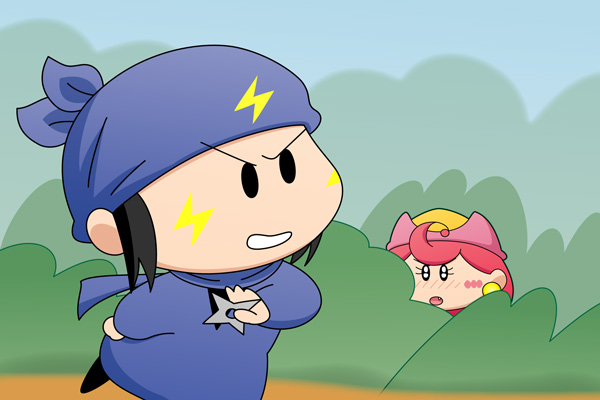
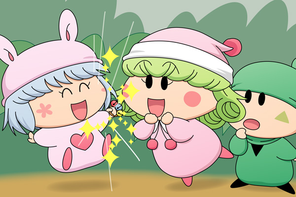

年末恒例(?)となりつつある妖精人気投票企画を2009年末にも実施し、皆様よりたくさんの投票をいただきました。大変遅くなりましたが、この記事にて投票結果を発表いたします！（実施から３ヶ月以上も経っての結果報告となり申し訳ありません）
まずは投票１位を獲得した妖精に登場していただきましょう(^^)。
アクミ＆ネズミ(6)

アクミ「リルムたちに後押しされてネズミの修行場へやってきたけど・・」
アクミはそ～っと草むらからネズミの方へ視線を送りました。
ネズミは修行に夢中で、アクミの視線には気付いていないようです。
アクミ「あ～もう、何でアタイはストーカーみたいにこそこそしているんだ？
コンビ組んでた時と同じように普通に接すればいいじゃん！
あの時と同じようにまたコンビを組めたら・・・」
ネズミを見ているうちにアクミは顔が赤くなってきました。
アクミ「でも・・・今のアイツはアタイのことどう思ってるんだろう？」
| 今回 | 票数 | 名前 | 2008年 |
|---|---|---|---|
| １位 | 27票 | ネズミ | １位 |
| ２位 | 23票 | パピィ | ２位 |
| ３位 | 15票 | リルム | １２位 |
| ハンゾー | ８位 | ||
| ５位 | 13票 | ヤマネ | ３位 |
| アクミ | ７位 | ||
| ７位 | 12票 | ヤシチ | ８位 |
| ムルモ | ４位 | ||
| ９位 | 9票 | ミルモ | ５位 |
| サスケ | １２位 | ||
| １１位 | 7票 | ユリン | ― |
| １２位 | 6票 | ルンバ | ― |
| アンナ | ２０位 | ||
| １４位 | 5票 | アンリ | ８位 |
| １５位 | 4票 | マンボ | ２０位 |
| アロマ | ６位 | ||
| １７位 | 3票 | ミモモ | ― |
| ソフト | １２位 | ||
| センリ | １２位 | ||
| カメリ | ― | ||
| ２１位 | 2票 | ピクモ | ２０位 |
| ハーモ | ― | ||
| オチョー | ― | ||
| ２４位 | 1票 | 妖精楓 | ― |
| ワカバ | ２０位 | ||
| ライア | ― | ||
| ムーン | ― | ||
| ミレン | ― | ||
| ベルル | ― | ||
| フィア | ― | ||
| ビケー | ８位 | ||
| トルス | ― | ||
| ドリム | ― | ||
| チムル | ― | ||
| サリア | ２０位 | ||
| コヨミ | ― | ||
| ガビン | １２位 | ||
| オトメ | ２０位 | ||
| アクア | ２０位 |
それでは結果を発表いたします！ １位はアクミ・・・ではなくて、昨年と同じくネズミが２連覇を達成しました！ そしてパピィも２年連続で２位をゲット！ 2009年のムルモ屋本舗での活躍を考えると、この２人の順位は納得出来ますね。
３位以下に注目すると、残念ながら３位から落ちてしまったヤマネに代わり、リルムとハンゾーがランクアップ！ ハンゾーファンは意外と多い！？
その他の結果はご覧の通りです。皆さんが投票された妖精は何位にランクインしましたか？
2010年末もまた同じ企画を実施する予定です。果たしてネズミの３連覇なるか！？ それも今年の活躍次第ですね。2010年も皆さんでミルモでポン！を盛り上げていきましょう！［コメント一覧］
リルム＆ハンゾー＆パピィ(1)

パピィ「パピィでポン！」
リルム「さぁ、わたくしたちでアクミさんたちを盛り上げますわよ！」
パピィ「もうアクミたんったら・・・。
見ててじれったいから、早く告白ちてほちいわね」
ハンゾー「あんまりうまくいきそうにないのら～」
パピィは魔法でキャンディの雨を降らせました。
ネズミ「アクミ！？
なんでござるか？ このお菓子の大群は・・・」
アクミ「これはその・・・あっ」
ネズミ「危ないでござる！」
ネズミは体を張ってアクミをかばいました。その直後、体がくっついていることに気付いた二人はお互いはっとなり顔を背け・・・。以下は皆さんのご想像で(^◇^;)。
（本当はネズミ＆パピィ＆リルム＆ハンゾーの絵を描くつもりが、構図がまとまらなくて結局２枚の絵に分割となりました^^;）
(2010/4/7)